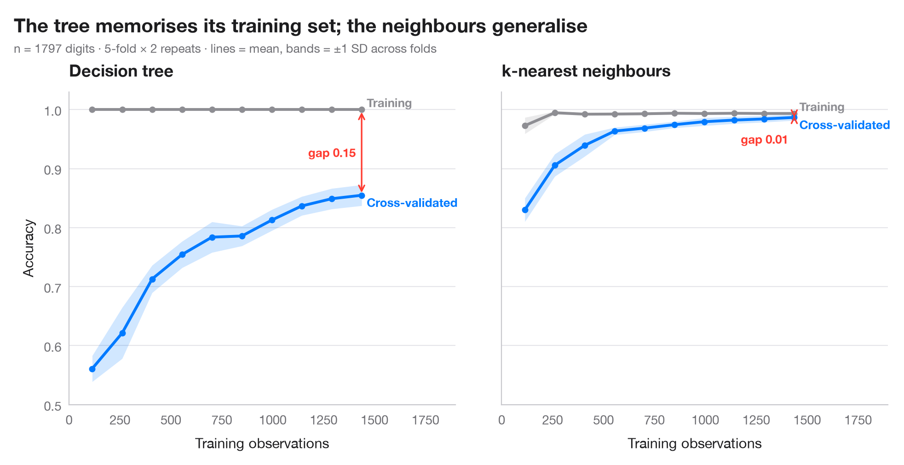

Learning curve
Training and cross-validated accuracy as the training set grows, for two models predicting which Facebook users share COVID-19 fake news.

A learning curve answers two questions before anyone collects more data: is the model overfitting (a wide gap between the training score and the cross-validated score) or underfitting (both scores low and close), and would more observations still help (is the validation curve still rising)? Lines are means over the folds of a repeated cross-validation; bands are ±1 standard deviation, so the width shows how much the estimate would move with another split.
Two models are compared on the same task: a deep decision tree, which
memorises its training set, and a standardised logistic regression. The
example is set in the context of Melchior, Warin and Oliveira (2025,
Technological Forecasting and Social Change) on the sharing of COVID-19 fake
news on Facebook. The data are simulated for illustration and are not
the paper's data or results: n = 3,000 users, about one in eight of whom
shared a fake-news post, described by age, time on Facebook, COVID-19 groups
joined, trust in mainstream media, conspiracy beliefs and the share of friends
who shared fake news. The curves come from
sklearn.model_selection.learning_curve with a 5 × 2 repeated stratified
split. The dashed line is the majority-class baseline: with a rare class,
accuracy must be read against it, and here the logistic regression barely
beats it: more users would not help; better predictors would.
import matplotlib.pyplot as plt
import numpy as np
import pandas as pd
from sklearn.linear_model import LogisticRegression
from sklearn.model_selection import RepeatedStratifiedKFold, learning_curve
from sklearn.pipeline import make_pipeline
from sklearn.preprocessing import StandardScaler
from sklearn.tree import DecisionTreeClassifier
# Simulated data, set in the context of Melchior, Warin & Oliveira (2025) [melchior2025fake]
# Data: 3,000 Facebook users; 1 = shared a COVID-19 fake-news post (a minority class)
rng = np.random.default_rng(2024)
n = 3000
X = pd.DataFrame({"age": rng.integers(18, 80, n), # years
"hours": rng.gamma(2, 0.9, n), # daily hours on Facebook
"groups": rng.poisson(3, n), # COVID-19 groups joined
"trust_media": rng.integers(1, 8, n), # 1-7 scale
"conspiracy": rng.integers(1, 8, n), # 1-7 scale
"friends_shared": rng.beta(1, 8, n)}) # share of friends who shared
logit = (-4.3 + 0.025 * (X.age - 45) + 0.35 * X.hours + 0.15 * X.groups
- 0.3 * (X.trust_media - 4) + 0.45 * (X.conspiracy - 4) + 6 * X.friends_shared)
y = (rng.random(n) < 1 / (1 + np.exp(-logit))).astype(int).to_numpy()
baseline = 1 - y.mean()
cv = RepeatedStratifiedKFold(n_splits=5, n_repeats=2, random_state=0)
sizes = np.linspace(0.08, 1.0, 10)
models = {"Decision tree": DecisionTreeClassifier(random_state=0),
"Logistic regression": make_pipeline(StandardScaler(), LogisticRegression(max_iter=1000))}
plt.rcParams["figure.constrained_layout.use"] = False # manual margins leave room for the subtitle
fig, axes = plt.subplots(1, 2, figsize=(10, 5), sharey=True)
fig.subplots_adjust(left=0.08, right=0.97, top=0.80, bottom=0.12, wspace=0.12)
for ax, (name, model) in zip(axes, models.items()):
m_, train, valid = learning_curve(model, X, y, cv=cv, train_sizes=sizes, n_jobs=-1,
shuffle=True, random_state=0)
ax.axhline(baseline, color="#8E8E93", ls="--", lw=1)
for scores, c, lab in [(train, "#8E8E93", "Training"), (valid, "#007AFF", "Cross-validated")]:
m, s = scores.mean(axis=1), scores.std(axis=1)
ax.fill_between(m_, m - s, m + s, color=c, alpha=0.18, lw=0)
ax.plot(m_, m, color=c, lw=2.2, marker="o", ms=4)
dy = 0.012 if lab == "Training" else -0.012
ax.text(m_[-1] + 40, m[-1] + dy, lab, va="center", fontsize=9.5, color=c, fontweight="semibold")
gap = train.mean(axis=1)[-1] - valid.mean(axis=1)[-1]
ax.annotate("", xy=(m_[-1], valid.mean(axis=1)[-1]), xytext=(m_[-1], train.mean(axis=1)[-1]),
arrowprops=dict(arrowstyle="<->", color="#FF3B30", lw=1.2))
ax.text(m_[-1] - 50, valid.mean(axis=1)[-1] + (gap / 2 if gap > 0.05 else -0.04), f"gap {gap:.2f}",
ha="right", va="center", fontsize=9.5, color="#FF3B30", fontweight="semibold")
ax.set_title(name)
ax.set_xlabel("Training observations")
ax.set_xlim(0, m_[-1] * 1.32)
axes[0].text(60, baseline + 0.008, f"majority-class baseline {baseline:.2f}", fontsize=9, color="#6E6E73")
axes[0].set_ylabel("Accuracy")
axes[0].set_ylim(0.7, 1.02)
fig.suptitle("The tree memorises its training set; logistic regression plateaus just above the baseline",
x=0.02, y=0.97, ha="left")
fig.text(0.02, 0.885, f"n = {n:,} users (simulated), {y.mean():.0%} shared fake news · "
"5-fold × 2 repeats · lines = mean, bands = ±1 SD across folds",
fontsize=9.5, color="#6E6E73")
plt.show()
Figures use the optional PyStatlas style: add plt.style.use("pystatlas.mplstyle") to match the look exactly.
Data source
- Simulated data. Simulated data with a fixed random seed, created for this example.
No real respondents, documents or measurements: the numbers only illustrate how the chart and its statistics work. - Melchior, Warin & Oliveira (2025), COVID-19 fake-news sharing on Facebook. Melchior, C., Warin, T., & Oliveira, M. (2025). An investigation of the COVID-19-related fake news sharing on Facebook using a mixed methods approach. Technological Forecasting and Social Change, 213, 123969. https://doi.org/10.1016/j.techfore.2024.123969
The example is set in the context of this paper; unless its description says otherwise, the numbers are simulated and are not the paper's data or results.
The examples illustrate statistical methods. Their numbers are simulated unless an entry says otherwise, and their titles describe what each figure shows in these simulated data — not findings of the cited papers, nor the author's position on the substantive question. For results, context and data, rely on the papers cited here.
How to cite
PyStatlas is created and maintained by Thierry Warin. If it helped your work, please cite it.
Warin, T. (2026). Learning curve. In PyStatlas: A Python Gallery of Statistical Graphics for the Social Sciences (Version 1.1.0) [Computer software]. https://warint.github.io/pystatlas/machine-learning/learning-curve/
@misc{warin2026statlas,
author = {Warin, Thierry},
title = {PyStatlas: A Python Gallery of Statistical Graphics for the Social Sciences},
year = {2026},
version = {1.1.0},
howpublished = {\url{https://warint.github.io/pystatlas/}},
note = {Source code: https://github.com/warint/pystatlas}
}More in Machine learning

Confusion matrix with metrics
How well a classifier sorts tweets into Environmental, Social and Governance topics — out-of-fold 3 × 3 confusion matrix with bootstrap intervals for the metrics.
yardstick::conf_mat() + autoplot()
Precision–recall curves
Out-of-fold precision–recall curves for two classifiers predicting which Facebook users share COVID-19 fake news, with average precision and the no-skill baseline.
yardstick::pr_curve() + autoplot()
Cross-validated model comparison
Fold-by-fold R² of six models predicting the waste rate of production batches, with means and corrected 95% intervals.
caret::resamples() + bwplot() / tune::autoplot()